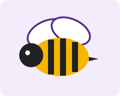

The queen
She is the only bee that lays eggs, sometimes over a thousand in one day. She is a little longer than the others, and workers feed and groom her.
Watch honey bees at work, then follow them next door to the garden center they help bloom.
Behind the glass of our observation hive, thousands of honey bees live and work as one team. Every day they fly out to the garden center beside the zoo, visit flowers and carry pollen from bloom to bloom. That helps the plants make seeds and fruit, and it gives the bees nectar to bring home. Look closely and you may spot a bee returning with bright pollen packed on her back legs.

She is the only bee that lays eggs, sometimes over a thousand in one day. She is a little longer than the others, and workers feed and groom her.
All workers are female. As they grow up their jobs change: cleaning, nursing babies, building wax, guarding the door and finally collecting nectar and pollen.
Drones are the males. They do not sting or collect food. Their job is to mate with a queen from another hive.
A forager that finds great flowers returns and does a "waggle dance." The angle of the dance points toward the flowers, and a longer waggle means they are farther away.
Six-sided cells fit together with no gaps, so bees use the least wax to build the most storage space for honey and baby bees.
Fuzzy bee bodies pick up sticky pollen. When the bee lands on the next flower, some pollen rubs off, and that flower can now make seeds and fruit.
Visiting tip: Stay calm, keep your hands off the glass, and look for the queen. Workers often crowd around her.